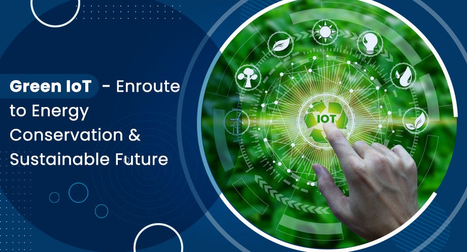
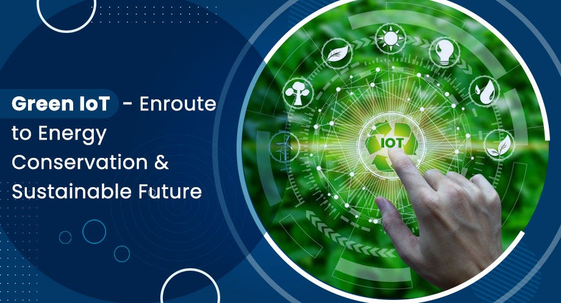

IOT & SUSTAINABILITY
The Internet of Things (IoT) can help businesses and the environment by enabling real-time monitoring of sustainability metrics. IoT sensors can collect data on: Energy usage, Emissions, Waste generation.
IoT can also help businesses optimize their operations by:
- Monitoring energy usage
- Reducing waste
- Managing resources more effectively
IoT is one of a group of technologies that are enabling new positive impacts on sustainability. Other technologies include:
- Artificial intelligence (AI)
- Cloud and edge computing
- Data processing and analytics
IoT can help businesses take informed actions to minimize their environmental impact. For example, smart grids can adjust energy distribution based on demand, reducing energy waste.
 
